| 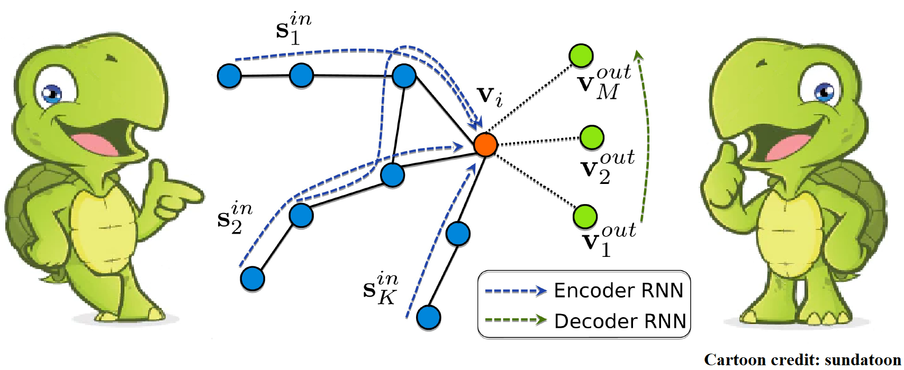 |
Hang Chu, Daiqing Li, David Acuna, Amlan Kar, Maria Shugrina, Xinkai Wei, Ming-Yu Liu, Antonio Torralba, Sanja Fidler Neural Turtle Graphics for Modeling City Road Layouts ICCV 2019, oral Paper Video Project Code (awaiting Nvidia's permission) |
| 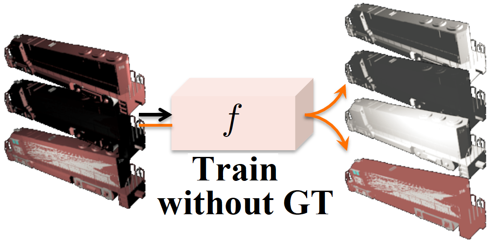 |
Wei-Chiu Ma, Hang Chu, Bolei Zhou, Raquel Urtasun, Antonio Torralba Single Image Intrinsic Decomposition without a Single Intrinsic Image ECCV 2018 Paper |
|
Hang Chu, Daiqing Li, Sanja Fidler A Face-to-Face Neural Conversation Model CVPR 2018 Paper Video Project Live Demo (by request) Media: Seamless Gigazine Borealis AI |
|
| 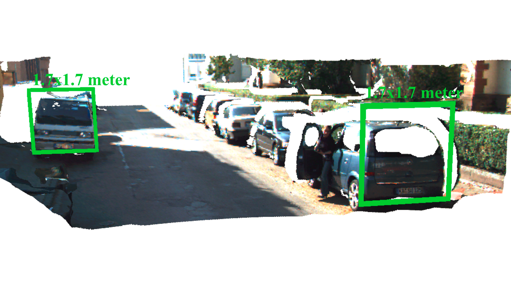 |
Hang Chu, Wei-Chiu Ma, Kaustav Kundu, Raquel Urtasun, Sanja Fidler SurfConv: Bridging 3D and 2D Convolution for RGBD Images CVPR 2018 Paper Code |
| 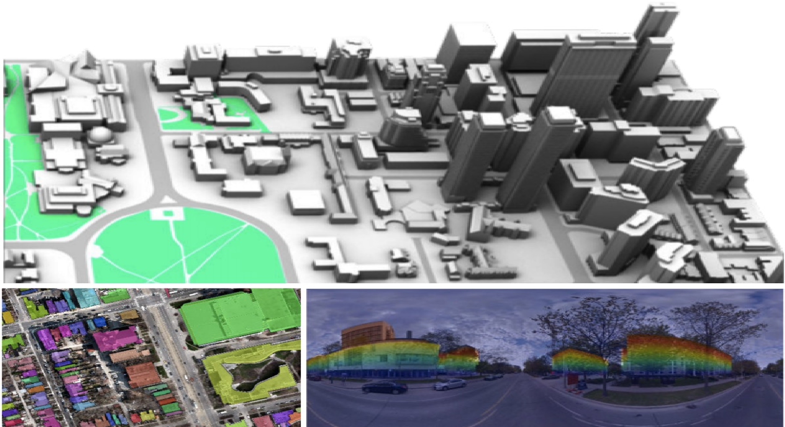 |
Shenlong Wang, Min Bai*, Gellert Mattyus*, Hang Chu*, Wenjie Luo, Bin Yang, Justin Liang, Joel Cheverie, Sanja Fidler, Raquel Urtasun TorontoCity: Seeing the World with a Million Eyes ICCV 2017 Paper |
| 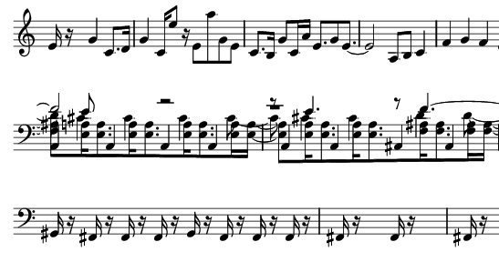 |
Hang Chu, Raquel Urtasun, Sanja Fidler Song From PI: A Musically Plausible Network for Pop Music Generation ICLR 2017, workshop track, invited full-length paper Paper Project Media: The Register Human performing: Baca et al. Sea Level Appeared in The Simpsons S30E05 |
| 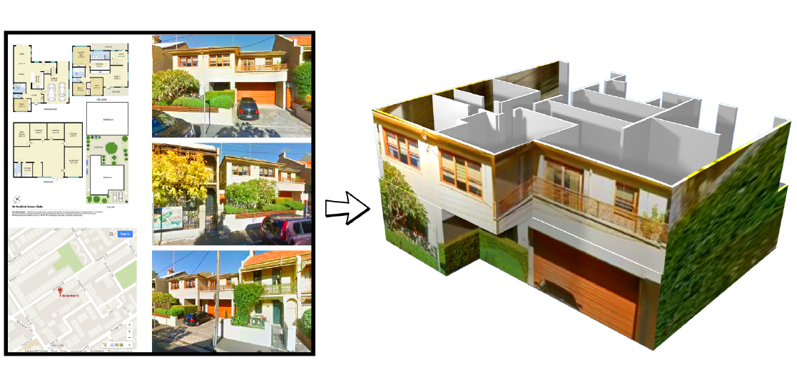 |
Hang Chu, Shenlong Wang, Raquel Urtasun, Sanja Fidler HouseCraft: Building Houses from Rental Ads and Street Views ECCV 2016 Paper Video Code Project Media: 2 Minute Papers |
| 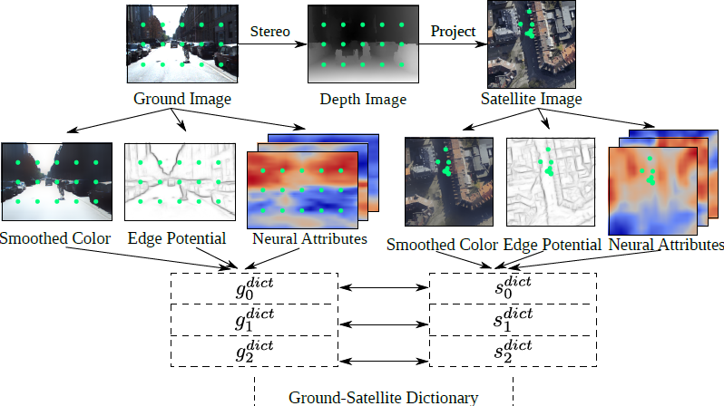 |
Hang Chu, Hongyuan Mei, Mohit Bansal, Matthew R. Walter Accurate Vision-based Localization by Transferring Between Ground and Satellite Images NIPS 2015, workshop on Transfer and Multi-Task Learning Paper Extended Version |
| 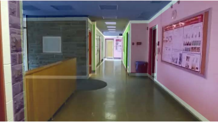 |
Hang Chu, Dong-Ki Kim, Tsuhan Chen You Are Here: Mimicking the Human Thinking Process in Reading Floor-Plans ICCV 2015 Paper Video |
| 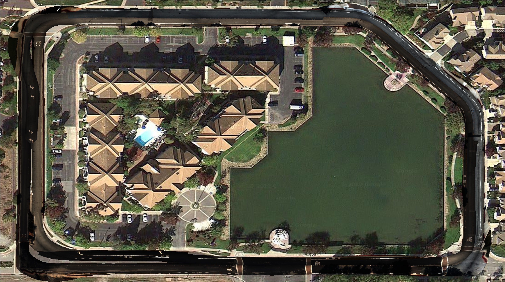 |
Hang Chu, Anh Vu Consistent Ground-Plane Mapping: A Case Study Utilizing Low-Cost Sensor Measurements and a Satellite Image ICRA 2015 Paper Video Project |
| 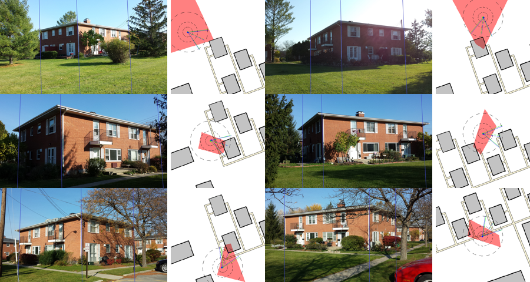 |
Hang Chu, Andrew Gallagher, Tsuhan Chen GPS Refinement and Camera Orientation Estimation from a Single Image and a 2D Map CVPR 2014, workshop on Mobile Vision Paper Project Code |
| 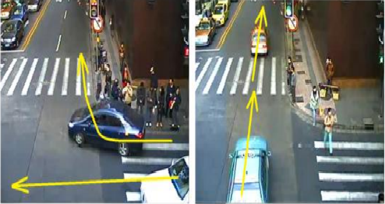 |
Weiyao Lin, Hang Chu, Jianxin Wu, Bin Sheng, Zhenzhong Chen A Heat-Map-based Algorithm for Recognizing Group Activities in Videos T-CSVT 2013 Paper Project |

|
Hang Chu, Weiyao Lin, Jianxin Wu, Xingtong Zhou, Yuanzhe Chen, Hongxiang Li A New Heat-Map-based Algorithm for Human Group Activity Recognition ACM Multimedia 2012 Paper Project |
{kind=link}